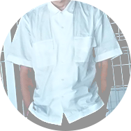

ABOUT
実績は"０"ですが、作品に対する気持ちや愛情は誰にも負けません！
■UN MER（アンメール）とは…？
僕の名前の”一洋”を、一文字ずつフランス語で表記したのが由来です。
一：１をフランス語で”UN”、洋：海、海洋をフランス語で”MER”
■ロゴデザイン
”太平洋のような広い心を持ってほしい”という意味が込められた、”MER（洋）”の”M”を使い、
色は「配慮」の意味を持つ”サンオレンジ”と、愛情の意味を持つ”紅梅色”を選びました。
■PROFILE

下島 一洋 (Shimojima Kazuhiro)
1982年 東京都八王子市出身
【経歴】
日本工学院八王子専門学校を卒業後
東京都八王子市の大学病院で、事務として14年勤務
神奈川県座間市の在宅クリニックで、事務として3年勤務
神奈川県座間市の在宅クリニックで、事務として3年勤務
退職後、求職者支援訓練にてWeb動画・Webデザインの勉強をする
【趣味】
・写真撮影（風景・ポートレート）
・ドラム
【使用ソフト】
・Adobe Photoshop
・Adobe Illustrator
・Adobe Premiere Pro